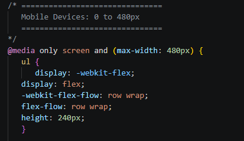
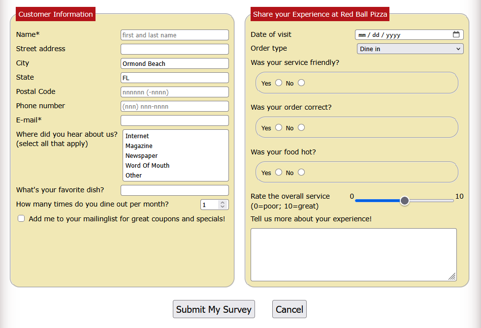
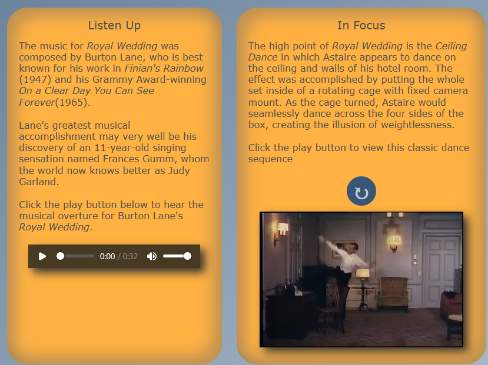

Module 5 of the textbook focused on formatting websites for smaller screens, such as for mobile phones or tablets. Using the conditional "@media" statement and specifing screen width, the website would automatically adjust for different devices, even among different phone types. Everything from the iPhone SE to the iPhone 18 could fit the website nicely within its borders.

Module 7 introduced web forms and various ways of collecting input from a visitor of the website. Tools such as checkboxes, radio buttons, sliders, and text entry forms were all used during the assignments of this chapter.

Module 8 employed videos, animations, and audio to add to the website. "Cinema Penguin" used videos showing off classical dances, audio links showcasing music, and even little animations to spin entire elements of the page around or blow up the size of text when it was selected.
